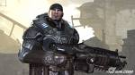
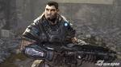
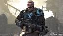
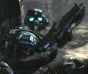
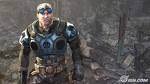
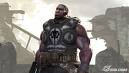
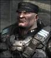
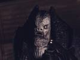
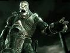
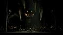

De: La Frikipedia, la enciclopedia extremadamente seria.
De: La Frikipedia, la enciclopedia extremadamente seria. De: La Frikipedia, la enciclopedia extremadamente seria.
Gears of War es uno de esos juegos en los que te envicias por horas y el 99% del tiempo que estás jugando la pantalla está manchada de sangre; que generalmente será la tuya. Tu misión es matar; da igual que mates de aburrimiento, que mates bebés, suegras, gatos, iguanas o hurones o que te mates a pajas mates a tus compañeros de equipo.
Artículo principal: GEO
| Mal Personaje | Fotos del archivo COG | Descripción. |
|---|---|---|
| Marcus Pennis |  |
El líder del escuadrón, su único objetivo es llevar a la victoria a su escuadrón aunque eso les cueste 10 Carmines. Se caracteriza por estar siempre al frente y cuidarle las espaldas a su marido Dominic, más tarde lo ascienden a Sargento después de sobornar a medio ejercito. |
| Domino Satánico |  |
Marido de Marcus; su único objetivo en la vida es |
| Teniente Old Rin |  |
Como soldado es teta piruleta, pero haciendo ganchillo es un verdadero desastre. Si de primeras no os cae bien el tipo no pasa nada, porque Raam(la leche no, cazurro)le desvirga el estómago con un cuchillo que parece sacado de Alien vs Predator. Pero todo tiene su lado positivo, Kim era el sargento del escuadrón y como tú eras su amante te quedas con su puesto. |
| Antonio Carmine |  |
Primos lejanos de Kenny. Se ve que el director del juego tuvo una novia que se apellidaba igual y que esa novia nunca quiso chupársela. De ahí que mueran por diversas razones como por ejemplo atragantados, quemados, congelados, ahorcados, apuñalados, tiroteados, envenenados, desmembrados, triturados, por diarrea, por sífilis o por paliza skin. Generalmente es el mas estúpido del equipo siempre y le gusta meterse el rancer por el culo, pero no quiere que nadie se entere. Lleva un caso así porque todos se echan gases siempre y como el va hasta atrás siempre le llegan. |
| Ramon Bird |  |
Es rubio y por lo tanto gay. Es el ingeniero del equipo, triste excusa que sólo quiere decir que será de los primeros en morir. Pero el tipo es hasta útil porque es el único que supera a Mcgiver, reparando cosas con objetos cotidianos, puede reparar un auto con un sacapuntas. |
| Roll "El Negro" |
 |
Especie de rinoceronte en extinción. Carece de pene porque en su último intento de hacerse una manualidad se reventó el corazón del mismo(sí, probablemente Cole tenga más de 5 corazones) y éste nunca volvió a funcionar. También tiene pinta de ser gay; ya que no puede morir porque mamá se lo dijo. |
| Coronel "Duffman" |  |
Vejete pervertido que se trinca a Anya cuando Marcus no la está pidiendo café. Por lo demás es "normalito" aunque pide cosas un poco raritas como que Marcus se esfuerze a...¡un ridículo 110%!, además de tener una tonta afición a ver lo que hacen mal los soldados. Usa una gorra que le aprieta tanto que no lo deja pensar, la comenzó a usar desde el día en que se quedo calvo. |
| Hack "abre esta puerta" | imagen no disponible |
Lata del siglo 1 a.C. Le gusta violar puertas y entrar en propiedades ajenas. Gusta de pearse en la cara de los Gears mientras es invisible. |
| Raam "la cabra" |  |
Es el malo maloso del juego que quiere que los humanos le ayuden con su jardín. Tiene un cuchillo que viene a ser más o menos como tú. Finalmente hay que decir que mide así como 2,68 m de altura, pesa unos 286,34 kg y se parece a mi suegra. |
| Larvas o Locast |  |
Maricas de a pie, carne de cañón, tios mierdas, carmine versión langosta, como quieras llamarlos el caso es que yo particularmente no daría un duro por ellos.
|
| Putser |  |
Arañas gigantes a las que harás daño sólo si les disparas en la vejiga para que se giñen. Gustan de destruir edificios enteros(¿Y a quien no?) y de matar a millares de humanos (¿Y a quien no?). Por lo demás son del todo normalitas.
|
| Reavers 00 |  |
Maricas de a pie, carne de cañón, tios mierdas, Carmine versión langosta, como quieras llamarlos el caso es que yo particularmente no daría un duro por ellos.
|
| Ne-nersekers |  |
Son ciegas, si por lo que estáis pensando: por ver todos los capítulos de Gran Hermano, Ana y los siete etc... pero hay que dar un dato : eran y son las niñeras de Ram, pueden satisfacer sexualmente a media raza Locust , hembras de la especie locust imagínense que hay que echártelas para mantener la especie, así salió...
|
El juego se divide en 5 capítulos, desarrollándose cada uno de estos en una zona concreta. Todos los capítulos incluyen diversas mierdas, incluyendo a jefazos chungos al final de cada nivel.
Advertencia: Esta sección contiene detalles de la trama y el argumento. ¡¡Jódete, Jódete, Jódeteeeeeeee!!
El juego inicia 14 años después del día de Emergencia, donde el prisionero Marcus Fenix es liberado de la Penitenciaría de máxima seguridad de Jacinto por su amigo más cercano, Dooom Santiago. Ambos luchan para escapar de la prisión y después encontrarse con el resto del Escuadrón Delta, el soldado de 1ª de infantil Carmine y el teniente Kim. Poco después el escuadrón Delta se encuentra con el coronel Victor Duffman, quien tiene una historia antagonista con Fenix, y les da al escuadrón sus órdenes: Encontrar al Escuadrón Alfa y asegurar su posesión sobre el resonador.
Poco después bajan al campo de batalla para buscar al escuadrón Alfa, quien tiene en sus manos el resonador, la última esperanza de la humanidad para vencer a los Locost. El plan de Duffman es detonarlo para joder el mundo entero y así dar por culo al plan de los Locost. Dentro de la misión, Carmine muere a causa de un disparo de un Mone francotirador, para posteriormente encontrarse con un integrante del escuadrón Alfa: Coll, un ex-jugador del "Paliza Ball", quien rápidamente se une al escuadrón Delta. Posteriormente pierden comunicación con Control a causa de lo Sembradores, lo que son la prioridad de la misión para poder reestablecer comunicación. Luego de que destruyen a los 3 sembradores se mueven en busca de los supervivientes.
Al encontrar a los supervivientes del escuadrón Alfa, son atacados por los refuerzos Locust, y aquí es donde el general RAAM hace su primera aparición dentro del juego matando al teniente Kim con su espada y al final de este suceso entran a una tumba, donde son atacados por una Nenerseker, a la cual Marcus y Dooom necesitan sacarla de la tumba para posteriormente derribarla con el martillo del alba. Aquí es donde Marcus es ascendido a sargento, lo cual no le agrada a Damon Baird, un nuevo integrante del escuadrón Delta, mientras esperan a ser recogidos por el King Macavren.
Marcus, Dooom, Coll y Baird buscan la manera de salir de la ciudad, que es territorio Locost. Duffman les comunica que tienen una central eléctrica cerca, y que deben dirigirse a ella para activar el resonador. Sin embargo, se hace de noche, y por la noche salen los Krill, letales para humanos y Locost. El equipo tendrá que abrirse paso entre las hordas enemigas para llegar a un poblado de supervivientes.
Los supervivientes malviven como pueden, plagados de ratas(su única comida en general) y rodeados de Locost y Krills. Dooom busca a alguien, y por ello logra que le dejen tomar prestado un vehículo, pero está tras dos puntos de control, en territorio enemigo. Marcus y Dooom deberán ir por los diversos puntos derribando Locost y escapando de los Krill, a base de encender luces, mientras Coll y Baird se quedan a ayudar a los supervivientes.
Por el camino tendrán que sobrevivir a cruzar un río, a un borracho que les tiene que ir encendiendo las luces del camino, y al contraataque Locost que se produce en una gasolinera. Al final lograrán el vehículo, y, tras escapar de los Krill, volverán a defender el poblado, donde se está formando una gran batalla.
Tras la batalla, el equipo sale de la ciudad. Es de noche, llueve mucho y el vehículo se estropea. Así, el equipo se dirigirá a la central eléctrica a pie, donde parece haber un gran número de Infames "encendidos", Infames que han mutado y son extramedamente volátiles, explotan al mínimo contacto. El equipo tendrá que buscar una manera de entrar en la central, y defenderse de los Infames. Para ello se dividirán en dos.
Tras entrar en la central, encuentran a un superviviente que los guía durante poco tiempo, hasta que logran reunirse con el resto del equipo. Después subirán en los carros de la mina, defendidos por Locost, para ir bajo tierra. Coll y Baird volverán a quedarse atrás, protegiendo el resonador, mientras Marcus y Dooom avanzarán abriendo camino.
Tras múltiples peleas contra Locust y algunas caídas, el equipo llega a la zona de procesamiento de la Imulsión, el líquido más caro del planeta. Ahí tendrán que enfrentarse a su primera batalla con un Torsper, y derrotar a unos guardias Intel. Poco después usarán el resonador, sin lograr los efectos deseados.
Entonces, Baird se dará cuenta de que ya disponían de mapas bastante completos, que parecían provenir de la casa de Marcus, su próximo destino...
El equipo vuelve a la ciudad, solo para encontrarse con un gran contraataque Locost. Los Locost intentarán frenar el avance, con múltiples escaramuzas repletas de todo tipo de enemigos, incluyendo otra Nenerseker. Al final, el equipo logrará llegar a la casa de Marcus, donde deberán ir al laboratorio en busca de los condones mapas. Tras conseguirlos, y descubrir que hay miles de túneles plagando el planeta, el equipo deberá intentar salir de la casa, que está siendo asediada. Tras una última persecución, en la que casi son destruidos por un Booomer, el equipo logra ir a la estación, donde está el tren que contiene su última esperanza....
El equipo intenta subirse al tren, pero son jodidos por un ataque Locost. Durante el ataque, Marcus y Doom lograrán subir al tren, quedando Coll y Baird tirados en la estación, esperando a ser recogidos por Duffman(a joderse). Marcus y Doom deben llegar a la parte delantera del tren, donde está una potente bomba que acabará con los Locost.
Por el camino se enfrentarán a todo tipo de enemigos, incluyendo otra Nenerseker sin martillo del alba, y a varios rivers 0'0. Los Infames estarán a punto de detener el tren, pero al final ambos llegarán a la parte delantera, donde les espera el General Raam. Ya es de noche de nuevo, y los Krill, aliados de Raam, atacarán sin piedad.
Aquí se desarrolla la última batalla, entre Marcus, Dom, y el helicóptero con Hoffman, Coll y Baird, contra Raam, los Krill y los rivers. Una vez derrotado Raam, la bomba llegará a su destino, destruyendo los túneles Locust y dando la victoria a los humanos. Aunque la reina Locust no está tan segura de la derrota...
ADVERTENCIA: El armamento balístico de monociclo autodemolicionista es altamente inestable y volátil, vamos que si tiras de la anilla de una granada y te la quedas en la mano dudamos mucho que estes leyendo este artículo.
Granadas, las típicas granadas que explotan y que puedes pegar con un chicle a la pared, para que cuando el enemigo pase y arranque el chicle para ver si tiene sabor le estalle, ahora también hay granadas de pinta, las cuales al estallas sueltan una flatulencia que te mata por su horrendo aroma, las granadas de humo son como las de tinta, pero éstas solo matan carmines.
Pistola de cañón corto o la "Engrapadora": Arma mamona que no sirve para un carajo mas que para tener lugar para cambiarla por una boltock y para joder mientras tienes el escudo o a una perra un rehén.
La lancer tambien llamada "sierra": Es una metralleta armada con una balloneta sierra la cual es muy temida por los nobatos ya que si eres asesinado por un "BOT" en nivel informal significa que eres un asco y no sirves para una mierda que eres malo.
Ezcopeta Gñashero la famosisíma "chaquetera" o tambien llamada "matazorras": Arma de corto alcance que bien aplicada te convierte en una pila de mierda restos humanos y al usar combinaciones como golpe chaqueta destruyes todo a tu paso.
Rifle de Francotirador de largo alcance: Rifle para los cobardes, o en mi caso, para los que la saben usar, que les gusta estar escondidos y que no sirven ni pa una mamada(que ironía de nuevo).
Martillo del Alba: El martillo del Alba es un arma de rayos de partículas por inmulsión capaz de arrassar edificios enteros, vamos que se necesita que algún parado coloque el satélite justo encima de quien usa el martillo(sin necesidad de que el satélite este en contacto con quien dispara el martillo). Se rumorea que usa tecnología xenoforme al Poder de Cristo. Solo se usa en campo abierto debido que el guebon del satélite no ha podido localizar a nadie dentro de una casa.
Hammer Bust: No voy a perder tiempo explicando el funcionamiento de un arma de plueiciclo circular impulsado por reacciones químicas producidas por una reacción entre ácido sulfúrico con mierda de gato seca, pero como soy bueno se los explicaré, esta arma es mas potente que la lancer pero no tiene la super ultra guay motosierra.
Arco explosivo: Para que carajos explicar, el nombre lo dice todo. Si corres de espalda ante uno de estos, corres el riesgo de que te metan una flecha incandecida por el orto y que te vuelvas mas loca que los que aun no gustan del gears o son fanáticos extremos del halo y/o religiosos sufrir perturbaciones y una visita al ortopedista.
Boltock: Pistolón de una potencia que te cagas, con un retroceso que te cagas, un cargador que te cagas y un diseño que no te cagas por que ya no te queda ni caca para cagar.
Metralleta fija o como se llame(te da igual, si te pones enfrente de una quedas mas mierda que jesucristo ante chuk norris): Arma de los Locost, es una supermegahipermuchungaultrametralleta pesada fija(aunque Ram se cabreo un día y ahora lleva una siempre en la mano) y como dije anteriormente, versión mejorada de la metralleta de halo, ya que ésta... bueno.. el hecho de que esté en GOW la hace superior.. razones, los cojones que traigo en el escroto, alguna otra razón?

|
Logro Desbloqueado En Serio... - 50 G Mate a 10000 enemigos en partida igualada(su puta madre) |
|
|
Logro Desbloqueado Más malo que la peste - 20 G Motosiérrese a sí mismo |
|
|
Logro Desbloqueado No endijo ná se endejó en venir - 100 G Porculice a Víctor Hoffman |
|
|
Logro Desbloqueado Muerte súbita total y absoluta - 100 G Canta Bisbal durante una batalla |
Autor(es):